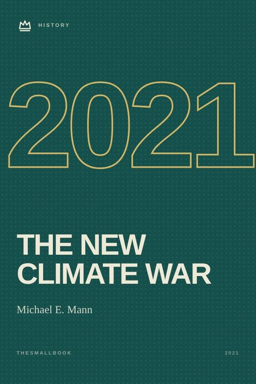

Library › Authors › Michael E. Mann
Books by Michael E. Mann
Michael E. Mann has one book in the library. Every book here is read down to the big idea, the lessons, the lines worth keeping and the actions worth taking. Start with the summary, then buy the full book if it earns a place on your shelf.

The New Climate War
2021 · 11 min · 8 lessons
Michael Mann argues that the denial industry shifted from denying the science to deflecting the blame and delaying action.
Mann, whose own work made him the target of a campaign, argues that outright denial largely lost and was replaced by four subtler moves: blame everything but fossil fuels, promote impossible solutions, divide the action into individual virtue, and demand that others act first. These are the tactics of the new climate war, and the counter is not anger but clarity about who is delaying and why.
Lessons in the summary
- From Denial to Deflection
- Blame Everything Else
- Impossible Solutions
- The Doom Gambit
- The Responsibility Trap
- Individual Action, Honestly
- What Policy Actually Works
- How to Argue Without Losing
Lines worth keeping
- Denial has not disappeared, it has changed clothes.
- The doomer position is not on our side. Giving up is a form of delay.
- Individual virtue is not the answer and it is not the enemy either.
Questions Michael E. Mann helps answer
Read nearby authors next
- Bill Bryson 2 books
- David Grann 2 books
- Isabel Wilkerson 2 books
- Ramachandra Guha 2 books
- Siddhartha Mukherjee 2 books
- Walter Isaacson 2 books
- William Dalrymple 2 books
- A.L. Basham 1 book